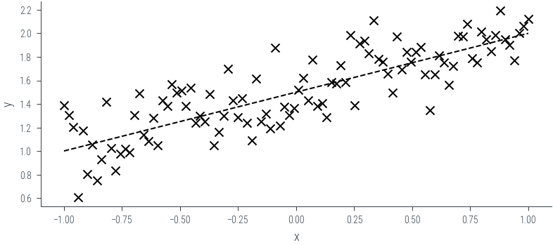

import torch
import numpy as np
import matplotlib.pyplot as plt
import pandas as pd
%matplotlib inline
# Retina display
%config InlineBackend.figure_format = 'retina'Computing the evidence term
from tueplots import bundles
plt.rcParams.update(bundles.beamer_moml())
# Also add despine to the bundle using rcParams
plt.rcParams['axes.spines.right'] = False
plt.rcParams['axes.spines.top'] = False
# Increase font size to match Beamer template
plt.rcParams['font.size'] = 16
# Make background transparent
plt.rcParams['figure.facecolor'] = 'none'prior_mu = torch.zeros(2)
prior_cov = torch.eye(2)
theta = torch.distributions.MultivariateNormal(prior_mu, prior_cov)
thetaMultivariateNormal(loc: torch.Size([2]), covariance_matrix: torch.Size([2, 2]))theta.loc, theta.covariance_matrix(tensor([0., 0.]),
tensor([[1., 0.],
[0., 1.]]))### True data
# True parameters
true_theta = torch.tensor([1.5, 0.5])
# Generate data
x = torch.linspace(-1, 1, 100)
torch.manual_seed(42)
y = true_theta[0] + true_theta[1] * x + torch.randn_like(x) * 0.2
plt.scatter(x, y, marker='x', color='k')
plt.xlabel('x')
plt.ylabel('y')
plt.plot(x, true_theta[0] + true_theta[1] * x, color='k', linestyle='--')
\[ I = \int p(\mathcal{D} \mid \theta) p(\theta) \mathrm{d}\theta \]
\[ I \approx \frac{1}{N} \sum_{i=1}^N p(\mathcal{D} \mid \theta_i) \]
where \(\theta_i \sim p(\theta)\)
# Plot the prior in 2d contour
theta1 = torch.linspace(-3, 3, 100)
theta2 = torch.linspace(-3, 3, 100)
theta1, theta2 = torch.meshgrid(theta1, theta2)
theta_values = torch.stack((theta1, theta2), dim=-1) # Shape: (100, 100, 2)
z = theta.log_prob(theta_values.view(-1, 2)) # Shape: (10000,)
z = z.view(100, 100) # Reshape to (100, 100)
plt.contourf(theta1.numpy(), theta2.numpy(), z.numpy(), 20)
plt.gca().set_aspect('equal')
plt.colorbar()/home/nipun.batra/miniforge3/lib/python3.9/site-packages/torch/functional.py:504: UserWarning: torch.meshgrid: in an upcoming release, it will be required to pass the indexing argument. (Triggered internally at ../aten/src/ATen/native/TensorShape.cpp:3483.)
return _VF.meshgrid(tensors, **kwargs) # type: ignore[attr-defined]<matplotlib.colorbar.Colorbar at 0x7feea97f91c0>
theta.sample((10,))tensor([[ 0.7262, 0.0912],
[-0.3891, 0.5279],
[-0.3609, -0.0606],
[ 0.0733, 0.8187],
[ 1.4805, 0.3449],
[-1.4241, -0.1163],
[ 0.2176, -0.0467],
[-1.4335, -0.5665],
[-0.4253, 0.2625],
[-1.4391, 0.5214]])theta_sample = theta.sample((1000,))
theta_sampletensor([[ 1.0414, -0.3997],
[-2.2933, 0.4976],
[-0.4257, -1.3371],
...,
[-0.5654, 0.2558],
[-1.5377, -0.1796],
[-0.1124, 0.2712]])def log_likelihood(theta, x, y):
"""Compute the likelihood of a linear regression model."""
theta = theta.view(1, 2) # Shape: (1, 2)
x = x.view(-1, 1) # Shape: (100, 1)
y = y.view(-1, 1) # Shape: (100, 1)
mean = theta[:, 0] + theta[:, 1] * x # Shape: (100, 1)
return torch.distributions.Normal(mean, 0.2).log_prob(y).sum() # Shape: (1,)log_likelihood(theta_sample[0], x, y), log_likelihood(theta_sample[1], x, y), log_likelihood(true_theta, x, y)(tensor(-595.4868), tensor(-18079.3672), tensor(20.7114))theta_sample[0], theta_sample[1], true_theta(tensor([ 1.0414, -0.3997]),
tensor([-2.2933, 0.4976]),
tensor([1.5000, 0.5000]))N = 100
for i in range(N):
theta_s = theta.sample()
plt.plot(x, theta_s[0] + theta_s[1] * x, color='k', alpha=0.1)
plt.plot(x, true_theta[0] + true_theta[1] * x, color='k', linestyle='--')theta_sampletensor([[ 1.0414, -0.3997],
[-2.2933, 0.4976],
[-0.4257, -1.3371],
...,
[-0.5654, 0.2558],
[-1.5377, -0.1796],
[-0.1124, 0.2712]])# Print the log likelihood of the true parameters, and first two samples
ll1 = log_likelihood(true_theta, x, y)
ll2 = log_likelihood(theta_sample[0], x, y)
ll3 = log_likelihood(theta_sample[1], x, y)
print(f'LL true: {ll1:.2f}, LL sample 1: {ll2:.2f}, LL sample 2: {ll3:.2f}')
print(f'Likelihood true: {ll1.exp():.2f}, Likelihood sample 1: {ll2.exp():.2f}, Likelihood sample 2: {ll3.exp():.2f}')
LL true: 20.71, LL sample 1: -595.49, LL sample 2: -18079.37
Likelihood true: 988233536.00, Likelihood sample 1: 0.00, Likelihood sample 2: 0.00# It seems we will have numerical problems. Let us use the log-sum-exp trick to compute the log evidence.
N = 15000
# Initialize a list to store log likelihood values
log_likelihood_values = []
# Monte Carlo estimation of the log marginal likelihood
for i in range(N):
# Sample θ from the prior distribution
theta_sample = theta.sample()
# Calculate the log likelihood using your provided function
log_likelihood_value = log_likelihood(theta_sample, x, y)
# Append the log likelihood value to the list
log_likelihood_values.append(log_likelihood_value.item())
# Use the log-sum-exp trick to compute the log marginal likelihood
log_marginal_likelihood = -torch.log(torch.tensor(N)) + torch.logsumexp(torch.tensor(log_likelihood_values), dim=0)
print("Log marginal likelihood:", log_marginal_likelihood.item())Log marginal likelihood: 11.202832221984863torch.tensor(log_likelihood_values).min()tensor(-36610.6055)torch.tensor(log_likelihood_values).max()tensor(19.7690)# Design matrix X
X = torch.stack([torch.ones_like(x), x], dim=1)
# Variance of the Gaussian noise in the likelihood
sigma_squared = 0.2**2
# Calculate the marginal likelihood (evidence) using the provided expression
marginal_likelihood = torch.distributions.MultivariateNormal(torch.matmul(X, prior_mu), torch.matmul(torch.matmul(X, prior_cov), X.t()) + sigma_squared * torch.eye(len(x)))marginal_likelihoodMultivariateNormal(loc: torch.Size([100]), covariance_matrix: torch.Size([100, 100]))log_prob_data = marginal_likelihood.log_prob(y)log_prob_datatensor(12.3548)